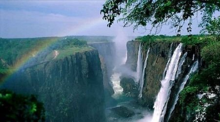
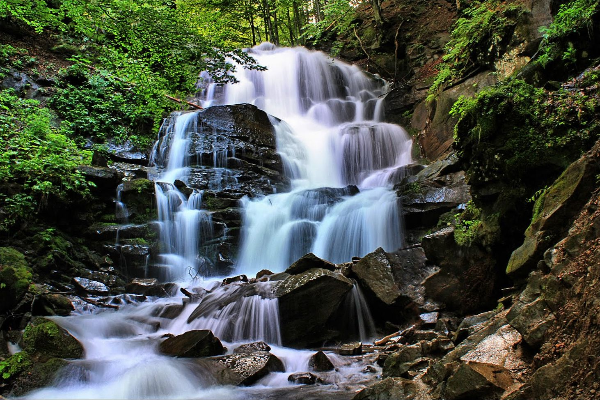
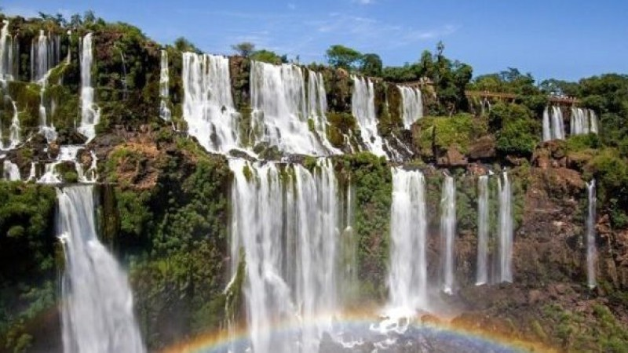

Такі вражаючі природні атракціони, як водоспади, рідкісні. Звичайно, люди давно навчилися створювати їх штучно, але все-таки творіння людських рук не в змозі конкурувати з тим, що було створеносама природа. Найвідоміші та красиві водоспади служать у місцях справжнього паломництва туристів з усього світу, прагнучи побачити це незабутнє видовище власними очима.
  